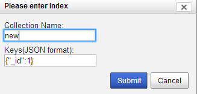
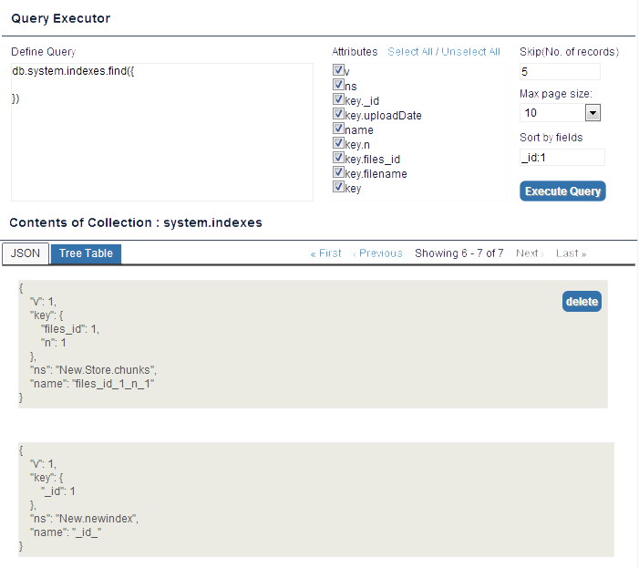
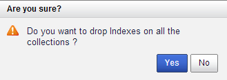

Users > Add user
- Hover on the USERS & INDEXES tab.
- Click System.users > Add User as shown in the figure below.

The Please enter user credentials dialog box appears.
- Enter the credentials as shown in the figure below.

- Select Read only if you do not wish to give write access permissions.
 The user is now created and can login to mViewer with the newly created credentials.
The user is now created and can login to mViewer with the newly created credentials.
- Click Submit. The system displays the Query Executor window displaying user attributes. See Figure below.

- In the Define Query box, you can add a query you wish to. <need more inputs for this>
- In the Attributes section, you can configure user properties as shown above.
- You can configure field information using the following fields:
- Skip(No. of records)
- Max pace size
- Sort by fields
- Click Execute Query
Depending on the values given, the records display in the JSON view as shown in the figure above.
Users > Edit User
- In the JSON view, click edit at the respective user.
The Please enter user credentials box appears. See figure below.

- Perform the following:
- Password: You can reset your password.
- Read only: Check this box, if you wish to deny write access permissions.
- Click Submit
The JSON view is refreshed along with the new changes.
Users > Delete User
- In the JSON view, click delete for the respective user.
The Are you sure? dialog prompt appears. See figure below.

- Click Yes
The user is dropped and JSON view is refreshed along with new changes.
Users > Drop Users
- Hover over system.users
- Click Drop Users as shown in the figure below.

- The system displays a delete user prompt. See figure below.

- Click Yes
All the users are now dropped. The JSON view is refreshed with changes.
Indexes > Add Index
- Hover over to system.indexes
- Click Add Index as shown in the figure below.

The systems displays a prompt as shown in the figure below.

- Enter a Collection name
- Enter a value for the key in JSON format
- Click Submit
The Add index confirmation message displays.
Indexes > View an Index
- In the Query Executor box, you can do the following:
| Functionality |
Description |
| Define Query |
You can run a find query by specifying the contents in the collector. |
| Attributes |
You can select/unselect values for v, ns, key._id, name, key |
| Skip(No. fo records) |
You can specify the number of records you wish to skip so that limited records are on display. |
| Max page size |
You can specify the number of records you wish to be displayed least being 10. |
| Sort by fields |
You can specify the field Id details here. |
- Click Execute Query
The JSON view is now refreshed with new values. See Figure below.

Indexes > Delete Index
- In the Contents of Collection: system.Indexes section, click Delete as shown in the figure above.
The system displays a delete prompt as shown in the figure below:

- Click Yes
The delete index confirmation message displays on top of the screen. Also the JSON view is refreshed.
Indexes > Drop Indexes
- Hover over System.indexes
- Click Drop Indexes. See Figure below.

The system displays a Drop Indexes prompt. See figure below.

- Click Yes
The system displays a confirmation message on top of the screen.
previousnext